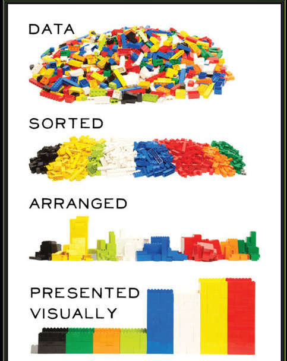

Chapter 4 Data manipulation

In order to manipulate and wrangle data, there are (at least) 3 frameworks available :
- Base R (not covered) : similar to Pandas
- Tidyverse/dplyr : high level interface
data.table: less friendly user interface but amazingly optimized
We’ll cover the tidyverse approach as it provides a very nice and coherent framework for more than data manipulation. The “tidy” comes an original paper from Hadley Wickham which sets those common sense principles
- Each variable must have its own column.
- Each observation must have its own row.
- Each value must have its own cell.
You can check further details and visualization on the R for data science online book
Those principles have been largely adopted by the community (powered by Rstudio) and created a full parallel dialect in R for almost all data science tasks : the tidyverse which offers a coherent set of features that are, in addition, often nicely optimized (written in C++)
4.1 Import
4.1.1 Text files
You can either use the basic read.table and related functions (eg read.csv) which work pretty fine. If the file is large, you might consider tools from other package such as read_csv and others from the readr package (part of the tidyverse)
## activityId uuidMsb uuidLsb name activityType
## 1 5570974040 3.695224e+18 -7.098507e+18 En piscine lap_swimming
## 2 5566524321 -5.212790e+18 -8.140623e+18 Vienna Cyclisme cycling
## 3 5561266034 1.271356e+18 -5.522844e+18 Korneuburg Cyclisme cycling
## 4 5555881653 -2.923938e+18 -4.676832e+18 Vienna Course running
## 5 5551811953 7.859043e+18 -7.909532e+18 Zwift - London virtual_ride
## 6 5551052200 -9.554086e+17 -6.866435e+18 En piscine lap_swimming
## userProfileId timeZoneId beginTimestamp eventTypeId rule sportType
## 1 1141258 124 1.600700e+12 9 public GENERIC
## 2 1141258 124 1.600602e+12 9 public CYCLING
## 3 1141258 124 1.600523e+12 9 public CYCLING
## 4 1141258 124 1.600439e+12 9 public RUNNING
## 5 1141258 124 1.600362e+12 9 public GENERIC
## 6 1141258 124 1.600353e+12 9 public GENERIC
## startTimeGmt startTimeLocal duration distance elevationGain elevationLoss
## 1 1.600700e+12 1.600708e+12 3640221 300000 NA NA
## 2 1.600602e+12 1.600609e+12 15064570 12293220 200100 196800
## 3 1.600523e+12 1.600530e+12 10382433 8360927 74500 74200
## 4 1.600439e+12 1.600447e+12 5393830 1792890 42600 42500
## 5 1.600362e+12 1.600369e+12 3626825 3492347 16000 0
## 6 1.600353e+12 1.600360e+12 3359145 285000 NA NA
## avgSpeed maxSpeed avgHr maxHr calories startLongitude startLatitude
## 1 0.0986 0.1122 NA NA 2547.532 NA NA
## 2 0.8160 1.9315 144 176 16345.268 16.31524 48.20915
## 3 0.8053 1.9557 117 161 8744.572 16.33986 48.34994
## 4 0.3324 1.2475 155 176 4923.274 16.31587 48.21432
## 5 0.9629 1.6364 138 163 3083.855 0.00000 0.00000
## 6 0.1011 0.3524 NA NA 2505.632 NA NA
## aerobicTrainingEffect avgFractionalCadence maxFractionalCadence
## 1 NA 0.0000 0
## 2 3.5 0.0000 0
## 3 2.4 0.0000 0
## 4 3.0 0.1875 0
## 5 0.0 0.0000 0
## 6 NA 0.0000 0
## elapsedDuration movingDuration anaerobicTrainingEffect deviceId
## 1 3955901 3099653 NA 3968818126
## 2 16176575 15000179 0.0 3968818126
## 3 11319866 10356078 0.0 3968818126
## 4 5538505 5389603 0.2 3968818126
## 5 3629000 3611000 NA 3825981698
## 6 3585826 2858951 NA 3968818126
## minTemperature maxTemperature minElevation maxElevation locationName
## 1 25 26 NA NA <NA>
## 2 19 29 18480 95480 Vienna
## 3 18 29 13980 32200 Korneuburg
## 4 19 27 24920 54400 Vienna
## 5 NA NA 300 3420 City of Westminster
## 6 26 27 NA NA <NA>
## maxVerticalSpeed lapCount endLongitude endLatitude activeSets totalSets
## 1 NA 34 NA NA NA NA
## 2 0.43999939 25 16.25314 48.20399 NA NA
## 3 0.34000092 17 16.38793 48.38009 NA NA
## 4 0.08000183 18 16.31980 48.22264 NA NA
## 5 0.16000004 1 NA NA NA NA
## 6 NA 32 NA NA NA NA
## totalReps purposeful autoCalcCalories favorite pr elevationCorrected
## 1 NA FALSE FALSE FALSE FALSE FALSE
## 2 NA FALSE FALSE FALSE FALSE FALSE
## 3 NA FALSE FALSE FALSE FALSE FALSE
## 4 NA FALSE FALSE FALSE FALSE FALSE
## 5 NA FALSE FALSE FALSE FALSE FALSE
## 6 NA FALSE FALSE FALSE FALSE FALSE
## atpActivity parent maxRunCadence steps avgVerticalOscillation
## 1 FALSE FALSE NA NA NA
## 2 FALSE FALSE NA NA NA
## 3 FALSE FALSE NA NA NA
## 4 FALSE FALSE 104 15620 NA
## 5 FALSE FALSE NA NA NA
## 6 FALSE FALSE NA NA NA
## avgGroundContactTime avgStrideLength vO2MaxValue avgVerticalRatio
## 1 NA NA NA NA
## 2 NA NA 72 NA
## 3 NA NA 71 NA
## 4 NA 115.6389 58 NA
## 5 NA NA NA NA
## 6 NA NA NA NA
## avgGroundContactBalance avgDoubleCadence maxDoubleCadence avgPower
## 1 NA NA NA NA
## 2 NA NA NA 260
## 3 NA NA NA 202
## 4 NA 172.375 208 NA
## 5 NA NA NA 212
## 6 NA NA NA NA
## avgBikeCadence maxBikeCadence strokes normPower avgLeftBalance
## 1 NA NA 1198 NA NA
## 2 83 114 17968 296.0000 49.92
## 3 82 107 12571 231.0000 49.90
## 4 NA NA NA NA NA
## 5 91 114 0 218.3049 NA
## 6 NA NA 1152 NA NA
## avgRightBalance max20MinPower trainingStressScore intensityFactor
## 1 NA NA NA NA
## 2 50.08 375.1583 291.4 0.835
## 3 50.10 242.7692 122.8 0.653
## 4 NA NA NA NA
## 5 NA 221.0525 NA NA
## 6 NA NA NA NA
## lactateThresholdBpm lactateThresholdSpeed avgStrokes activeLengths avgSwolf
## 1 NA NA 23.0 60 74
## 2 NA NA NA NA NA
## 3 NA NA NA NA NA
## 4 NA NA NA NA NA
## 5 NA NA NA NA NA
## 6 NA NA 22.6 57 72
## poolLength avgStrokeDistance avgSwimCadence maxSwimCadence maxFtp workoutId
## 1 5000 217 27 29 NA NA
## 2 NA NA NA NA NA NA
## 3 NA NA NA NA NA NA
## 4 NA NA NA NA NA NA
## 5 NA NA NA NA NA NA
## 6 5000 221 27 30 NA NA
## decoDive parentId avgVerticalSpeed maxDepth avgDepth surfaceInterval
## 1 NA NA NA NA NA NA
## 2 NA NA NA NA NA NA
## 3 NA NA NA NA NA NA
## 4 NA NA NA NA NA NA
## 5 NA NA NA NA NA NA
## 6 NA NA NA NA NA NA
## floorsDescended bottomTime
## 1 NA NA
## 2 NA NA
## 3 NA NA
## 4 NA NA
## 5 NA NA
## 6 NA NAYou have many options to deal with issues :
septo specify the separator (\tfor tabulation,';'for semicolon… )decthe decimal separatorencodingthe file encoding (special characters from windows/unix systems can be misdetected)colClassesto force one column to be imported in another type than what is detectedhelp(read.table)for more options !
4.1.2 Excel files
You can import excel files (.xls and .xlsx) with the readxl package
## # A tibble: 6 x 89
## activityId uuidMsb uuidLsb name activityType userProfileId timeZoneId
## <dbl> <chr> <chr> <chr> <chr> <dbl> <dbl>
## 1 5570974040 3.6952… -7.098… En p… lap_swimming 1141258 124
## 2 5566524321 -5.212… -8.140… Vien… cycling 1141258 124
## 3 5561266034 1.2713… -5.522… Korn… cycling 1141258 124
## 4 5555881653 -2.923… -4.676… Vien… running 1141258 124
## 5 5551811953 7.8590… -7.909… Zwif… virtual_ride 1141258 124
## 6 5551052200 -9.554… -6.866… En p… lap_swimming 1141258 124
## # … with 82 more variables: beginTimestamp <chr>, eventTypeId <dbl>,
## # rule <chr>, sportType <chr>, startTimeGmt <dbl>, startTimeLocal <chr>,
## # duration <chr>, distance <chr>, elevationGain <chr>, elevationLoss <chr>,
## # avgSpeed <chr>, maxSpeed <chr>, avgHr <chr>, maxHr <chr>, calories <chr>,
## # startLongitude <chr>, startLatitude <chr>, aerobicTrainingEffect <chr>,
## # avgFractionalCadence <chr>, maxFractionalCadence <chr>,
## # elapsedDuration <chr>, movingDuration <chr>, anaerobicTrainingEffect <chr>,
## # deviceId <dbl>, minTemperature <chr>, maxTemperature <chr>,
## # minElevation <chr>, maxElevation <chr>, locationName <chr>,
## # maxVerticalSpeed <chr>, lapCount <dbl>, endLongitude <chr>,
## # endLatitude <chr>, activeSets <chr>, totalSets <chr>, totalReps <chr>,
## # purposeful <chr>, autoCalcCalories <chr>, favorite <chr>, pr <chr>,
## # elevationCorrected <chr>, atpActivity <chr>, parent <chr>,
## # maxRunCadence <chr>, steps <chr>, avgVerticalOscillation <chr>,
## # avgGroundContactTime <chr>, avgStrideLength <chr>, vO2MaxValue <chr>,
## # avgVerticalRatio <chr>, avgGroundContactBalance <chr>,
## # avgDoubleCadence <chr>, maxDoubleCadence <chr>, avgPower <chr>,
## # avgBikeCadence <chr>, maxBikeCadence <chr>, strokes <chr>, normPower <chr>,
## # avgLeftBalance <chr>, avgRightBalance <chr>, max20MinPower <chr>,
## # trainingStressScore <chr>, intensityFactor <chr>,
## # lactateThresholdBpm <chr>, lactateThresholdSpeed <chr>, avgStrokes <chr>,
## # activeLengths <chr>, avgSwolf <chr>, poolLength <chr>,
## # avgStrokeDistance <chr>, avgSwimCadence <chr>, maxSwimCadence <chr>,
## # maxFtp <chr>, workoutId <chr>, decoDive <chr>, parentId <chr>,
## # avgVerticalSpeed <chr>, maxDepth <chr>, avgDepth <chr>,
## # surfaceInterval <chr>, floorsDescended <chr>, bottomTime <chr>Options :
sheetto select whioch you want to importrange: the “zone” of the sheet you want to import (beginning and ending row/column to be provided)col_typesto specify the types of the column if misdetected?readxl::read_excelfor more information
4.1.3 More formats
The readr package provides other convenient functions to read the most common (open) formats. With haven, you can also read data from proprietary formats (SPSS, SAS, Stat,…).
JSON files can be read with for example rjsonlite and we will use it in an applicaiton example.
XML and HTML files can be parsed with the xml2package.
4.1.4 Read from databases / big data
This is a huge topic that we will only mention here, but for (almost) each database engine, there is a package available in order to be able to read data from databases
- General purpose :
odbc,RODBC,DBI\(\rightarrow\) you will need to install the DB’s drivers - Dedicated :
RSQLite,RPostgres,RMariaDB(can be used for mySQL too)… \(\rightarrow\) drivers included
With the 3 first package, you can connect to “monolith” databases, as well as to distributed databases. You can find more information on the Rstudio website. Another interesting resources is the dbplyr vignette, that describes how to connect to a database and query it using dplyr’s verbs.
In addition, the sparlyr package allows you to interact with a spark cluster (using dplyr syntax)
4.2 The grammar of data manipulation
Alert : After this section, pandas will appear much less appealing….
Following the tidy data principles, dplyr implements an actual grammar of data manipulation with verbs and human-readable syntax.
4.2.1 The pipe

The first operator to know is the pipe operator, %>% which allows you to redirect the output of a command “to the right” and hence create readable chains of commands.
Let’s extract the last 3 characters of “hello world”
First solution : create useless objects
char <- "hello world"
rev_char <- stringi::stri_reverse(char)
sub3 <- substr(rev_char,1,3)
stringi::stri_reverse(sub3)## [1] "rld"Second solution : where’s the beginning ????
## [1] "rld"Third solution : using the pipe
## [1] "rld"Under the hood : the dot represents the result of the previous step and can be placed somewhere else in the next function (rather than the first argument)
## [1] "rld"4.2.2 The verbs of manipulation
What do you do with data ?
- Select columns \(\rightarrow\)
select() - Filter rows \(\rightarrow\)
filter() - Create / modify columns \(\rightarrow\)
mutate() - Compute summaries of the columns \(\rightarrow\)
summarise() - Do group-wise operations \(\rightarrow\)
group_by() - Join with other tables \(\rightarrow\)
left_join(),right_join(),inner_join(),anti_join(),full_join()
I have the verbs, now I can associate them to make a sentence ! All those functions take as first argument a dataframe, which makes it very easy when chaining them with the pipe.
read.csv("Data/Sports/Activities.csv") %>%
select(activityType,avgSpeed,distance,startLongitude,startLatitude,sportType) %>% #select some metrics
mutate(distance=distance/100) %>% # distances are in decameter (?)
filter(activityType!="other") %>% # remove activities "other
group_by(activityType) %>%
summarise(total_dist=mean(distance))## # A tibble: 22 x 2
## activityType total_dist
## <chr> <dbl>
## 1 cross_country_skiing_ws 16717.
## 2 cycling 34124.
## 3 cyclocross 41210.
## 4 hiking 10678.
## 5 indoor_cardio NA
## 6 indoor_cycling NA
## 7 indoor_running 2311.
## 8 lap_swimming 3014.
## 9 multi_sport 63873.
## 10 open_water_swimming 2359.
## # … with 12 more rows4.2.3 Filter : conditions
This is the way you write conditions in R :
| Syntax | Condition |
|---|---|
| == | Equality test |
| != | Different than |
| %in% c(…) | Is in this list of values |
| \(>, >=\) \(<, <=\) | Greater/less than |
| ! (x %in% c(…)) | Not in the list |
| & | And |
| | | Or |
4.2.4 Mutate
Most of the data manipulation will be done in a mutate statement. This is where you can create additional columns, modify the ones existing. You can do any kind of transformation you want with this one. Depending on the type of the data, here are some additional packages that will help you :
lubridateto easily handle date variablesforcatsto handle factors (categorical variables)stringr(andstringi) to handle strings variables and work with regular expressionsifelse()andcase_when()to handle conditional operations
require(lubridate)
require(stringr)
dat <- dat %>%
mutate(start_time=as_datetime(startTimeLocal/1000), # create a timestamp
date = floor_date(start_time,"day"), # round to the day
is_bike=ifelse(activityType %in%
c("cycling","virtual_ride","indoor_cycling","road_biking","cyclocross"),T,F),
# is it bike or not ?
is_run = str_detect(activityType,"running|hicking"),
activity_recoded = case_when(is_bike ~ "Bike",
is_run ~ "Run",
str_detect(activityType,"swim") ~"Swim",
TRUE ~ "Other"))4.2.5 Summarize
This operation consists in summarizing several rows ofinto one or more synthetic value(s). We will cover the topic more in detail 5 but the most common summary function that you can use are :
- For continuous variables : average, sum, median, standard deviation, interquartile range (IQR), concentration indexes,…
- For categorical variables : count, count distinct, concentration indexes,…
Simple summary statistics over one numerical variable :
## total_distance
## 1 NA## total_distance
## 1 10693637146## avg_distance
## 1 1941826## median_distance
## 1 11864194.2.6 Join with other tables
Thanks to the xxx_join(table_a,table_b) functions you can combine several dataframes into one, matching the rows on chosen columns.
left_join()will keep the rows coming from table_aright_join()will keep the rows coming from table_binner_join()will keep the rows present in both tablesfull_join()will keep the rows from both tablesanti_join()will keep the rows from table_a that are not in table_b
 In the following code, we first compute a summary of distance and power for each combination of activity_recoded and deviceId and combine it together with the initial dataframe in order to compute a “distance percentage” for each activity, as the activity distance divided by the total distance recorded for the same type of activity and with the same device.
In the following code, we first compute a summary of distance and power for each combination of activity_recoded and deviceId and combine it together with the initial dataframe in order to compute a “distance percentage” for each activity, as the activity distance divided by the total distance recorded for the same type of activity and with the same device.
agg <- dat %>%
group_by(activity_recoded,deviceId) %>%
summarise(total_distance=sum(distance,na.rm = T),
avgPower = mean(avgPower,na.rm=T))
dat %>%
select(distance,activityId,activity_recoded,deviceId) %>%
left_join(agg,by=c("activity_recoded","deviceId")) %>%
mutate(distance_pct = 100*distance/total_distance) %>%
head()## distance activityId activity_recoded deviceId total_distance avgPower
## 1 300000 5570974040 Swim 3968818126 55009104 NaN
## 2 12293220 5566524321 Bike 3968818126 1419582250 241.7049
## 3 8360927 5561266034 Bike 3968818126 1419582250 241.7049
## 4 1792890 5555881653 Run 3968818126 453582639 NaN
## 5 3492347 5551811953 Bike 3825981698 166719556 228.2449
## 6 285000 5551052200 Swim 3968818126 55009104 NaN
## distance_pct
## 1 0.5453643
## 2 0.8659745
## 3 0.5889710
## 4 0.3952731
## 5 2.0947434
## 6 0.51809614.2.7 Manipulate several data in the same time
With all previous verbs above, you can use the across function to apply the same operation over a bunch of columns that you can select depending a simple enumeration or a condition (on their type or their name). This is a really powerful tool !
Example : we will convert all columns that are identifiers as character variables because the numbers have no meaning
dat <- dat %>%
mutate(across(c(contains("Id"),contains("uuid")),
as.character))
# Other stupid examples
dat %>% summarise(across(where(is.numeric),
function(xx) sum(xx,na.rm=T)))## beginTimestamp startTimeGmt startTimeLocal duration distance
## 1 8.021486e+15 8.036783e+15 8.036814e+15 22850917079 10693637146
## elevationGain elevationLoss avgSpeed maxSpeed avgHr maxHr calories
## 1 163374842 149923907 2186.754 113881.5 538175 637627 20569669
## startLongitude startLatitude aerobicTrainingEffect avgFractionalCadence
## 1 18707.3 190193.1 7579.3 383.8125
## maxFractionalCadence elapsedDuration movingDuration anaerobicTrainingEffect
## 1 170.5 11995810258 6623490405 276.1
## minTemperature maxTemperature minElevation maxElevation maxVerticalSpeed
## 1 46890 65603 35504232 66534189 322.7602
## lapCount endLongitude endLatitude activeSets totalSets totalReps
## 1 26369 10138.19 39058.89 0 0 0
## maxRunCadence steps avgVerticalOscillation avgGroundContactTime
## 1 81893 27827620 5202.02 149787.7
## vO2MaxValue avgVerticalRatio avgGroundContactBalance avgDoubleCadence
## 1 50052 4590.83 29360.86 124685.3
## maxDoubleCadence avgPower avgBikeCadence maxBikeCadence strokes normPower
## 1 163305 159062 120499 160192 11984172 172253.5
## avgLeftBalance avgRightBalance max20MinPower trainingStressScore
## 1 29746.24 29853.76 178191.6 146746.6
## intensityFactor lactateThresholdBpm lactateThresholdSpeed avgStrokes
## 1 640.338 12296 28.8716 36334.99
## activeLengths avgSwolf poolLength avgStrokeDistance avgSwimCadence
## 1 82178 38881 2028199 113919 21590
## maxSwimCadence maxFtp avgVerticalSpeed maxDepth avgDepth surfaceInterval
## 1 28979 28273 0 0 0 0
## floorsDescended bottomTime
## 1 0 04.3 Let’s import and wrangle some data !
4.3.1 The data
We will work on the summary data of all past activities, which come in JSON files. So basically, the data is contained in (nested) lists. This is real word data, it’s super messy and dirty ! You will have to :
- Import the data
- Import one of the files using
jsonlite - Inspect and understand the structure of the list
- Get all the metrics that are included
- Figure out how to extract one specific metric for one activity
- Design a function to extract one metric for all activities contained in the JSON
- Design a function that will extract all metrics for all activities in the JSON
- Import one of the files using
- Have a first cleaning of the data :
- Check the distance/elevation variables ; what do you think ?
- Check the speed related variables : what do you think ?
- Check the calories variable and adjust it
- Check the duration related variable and adjust them to have minutes
- To help you figuring out, you can check an activity on garmin’s site using this url and change the activity number for the one you are inspecting
A lot of reverse engineering ahead
4.3.2 One tool you will need : lapply()
JSON are lists, and to iterate over list elements, you can either use for loops, which is highly not recommended (R is no good with loops), or use lapply(). This function applies an operation over all elements of a list (or vector) and returns a list containing the result. You can also use sapply() which tries to coerce the result to a vector (if possible) if the expected output is not a list.
## List of 5
## $ : num [1:100] 0.944 1.183 1.093 0.928 0.754 ...
## $ : num [1:100] 2.68 2.3 1.77 2.12 2.07 ...
## $ : num [1:100] 4.05 2.54 4.76 3.83 2.79 ...
## $ : num [1:100] 4.4 4.42 4.65 3.6 4.48 ...
## $ : num [1:100] 5.9 4.62 5.83 6.25 5.82 ...Attention : be careful with the squared brackets
## [[1]]
## [1] 0.9436880 1.1831262 1.0925724 0.9280188 0.7540469 0.9104209 0.8712381
## [8] 0.9704622 1.0341959 0.8505307 0.8451915 0.8265596 0.9910725 0.8276541
## [15] 1.1416869 1.3554439 0.8770533 0.8934530 0.5983482 1.1486400 1.1270992
## [22] 0.9776215 1.1796192 0.9405892 1.0088531 0.7025829 0.5881996 1.3322965
## [29] 0.9360755 1.0658787 1.1266269 0.9540235 0.7489310 0.8694687 1.2280474
## [36] 1.2087421 1.0449005 1.3480429 0.8021613 1.3107555 0.8493253 0.9014136
## [43] 0.7113485 1.3169345 1.0737419 0.9787257 1.1642485 0.5714994 1.1188988
## [50] 1.4262235 1.1007646 1.0715430 1.0299048 0.8500849 0.8922556 1.0105037
## [57] 0.9473563 0.7583478 0.4443807 0.9510481 1.1715465 1.0068420 1.4001446
## [64] 0.8123661 1.3846631 1.3299469 1.4670911 0.5322030 1.1211732 1.0770184
## [71] 0.8741614 1.0802569 0.9200197 0.7028054 0.8608827 1.1757180 1.0645214
## [78] 1.1666853 1.3398172 0.6935351 1.0937889 0.8936660 0.8756284 0.9336252
## [85] 1.1585959 0.7589066 1.2015276 0.8559701 1.3121365 1.0196669 1.1283086
## [92] 1.0126564 0.9858663 1.0507537 0.9218198 0.9830380 1.0204346 0.6423202
## [99] 0.9263616 1.0201048## [1] 0.9436880 1.1831262 1.0925724 0.9280188 0.7540469 0.9104209 0.8712381
## [8] 0.9704622 1.0341959 0.8505307 0.8451915 0.8265596 0.9910725 0.8276541
## [15] 1.1416869 1.3554439 0.8770533 0.8934530 0.5983482 1.1486400 1.1270992
## [22] 0.9776215 1.1796192 0.9405892 1.0088531 0.7025829 0.5881996 1.3322965
## [29] 0.9360755 1.0658787 1.1266269 0.9540235 0.7489310 0.8694687 1.2280474
## [36] 1.2087421 1.0449005 1.3480429 0.8021613 1.3107555 0.8493253 0.9014136
## [43] 0.7113485 1.3169345 1.0737419 0.9787257 1.1642485 0.5714994 1.1188988
## [50] 1.4262235 1.1007646 1.0715430 1.0299048 0.8500849 0.8922556 1.0105037
## [57] 0.9473563 0.7583478 0.4443807 0.9510481 1.1715465 1.0068420 1.4001446
## [64] 0.8123661 1.3846631 1.3299469 1.4670911 0.5322030 1.1211732 1.0770184
## [71] 0.8741614 1.0802569 0.9200197 0.7028054 0.8608827 1.1757180 1.0645214
## [78] 1.1666853 1.3398172 0.6935351 1.0937889 0.8936660 0.8756284 0.9336252
## [85] 1.1585959 0.7589066 1.2015276 0.8559701 1.3121365 1.0196669 1.1283086
## [92] 1.0126564 0.9858663 1.0507537 0.9218198 0.9830380 1.0204346 0.6423202
## [99] 0.9263616 1.02010484.4 Tidy your data
The data will almost never come in a ready-to-use format. Wrangling the data, beyond cleaning it also sometimes imply to reshape it so that it conforms to the tidy principles. For that you have 2 functions :
pivot_longer()which will convert columns into rowspivot_wider(), the reciprocate operation, which will convert rows into columns
For example, we can chose that an observation is the combination of an activity and a metric. This representation can be useful in some cases (see 6).
dat_long <- dat %>%
select(activityId,where(is.numeric)) %>%
pivot_longer(-activityId,names_to="metric",values_to="value")
dat_long## # A tibble: 363,924 x 3
## activityId metric value
## <chr> <chr> <dbl>
## 1 5570974040 beginTimestamp 1.60e+12
## 2 5570974040 startTimeGmt 1.60e+12
## 3 5570974040 startTimeLocal 1.60e+12
## 4 5570974040 duration 3.64e+ 6
## 5 5570974040 distance 3.00e+ 5
## 6 5570974040 elevationGain NA
## 7 5570974040 elevationLoss NA
## 8 5570974040 avgSpeed 9.86e- 2
## 9 5570974040 maxSpeed 1.12e- 1
## 10 5570974040 avgHr NA
## # … with 363,914 more rowsWith this format you can get summary statistics for all metrics also easily :
## # A tibble: 66 x 2
## metric mean_val
## <chr> <dbl>
## 1 activeLengths 61.8
## 2 activeSets 0
## 3 aerobicTrainingEffect 2.88
## 4 anaerobicTrainingEffect 0.298
## 5 avgBikeCadence 91.2
## 6 avgDepth 0
## 7 avgDoubleCadence 162.
## 8 avgFractionalCadence 0.0696
## 9 avgGroundContactBalance 49.4
## 10 avgGroundContactTime 252.
## # … with 56 more rowsAnd you you can go back to the original format if you want :
group_by(dat_long,metric) %>%
summarise(mean_val=mean(value,na.rm=T)) %>%
pivot_wider(names_from = metric,values_from=mean_val)## # A tibble: 1 x 66
## activeLengths activeSets aerobicTraining… anaerobicTraini… avgBikeCadence
## <dbl> <dbl> <dbl> <dbl> <dbl>
## 1 61.8 0 2.88 0.298 91.2
## # … with 61 more variables: avgDepth <dbl>, avgDoubleCadence <dbl>,
## # avgFractionalCadence <dbl>, avgGroundContactBalance <dbl>,
## # avgGroundContactTime <dbl>, avgHr <dbl>, avgLeftBalance <dbl>,
## # avgPower <dbl>, avgRightBalance <dbl>, avgSpeed <dbl>,
## # avgStrokeDistance <dbl>, avgStrokes <dbl>, avgSwimCadence <dbl>,
## # avgSwolf <dbl>, avgVerticalOscillation <dbl>, avgVerticalRatio <dbl>,
## # avgVerticalSpeed <dbl>, beginTimestamp <dbl>, bottomTime <dbl>,
## # calories <dbl>, distance <dbl>, duration <dbl>, elapsedDuration <dbl>,
## # elevationGain <dbl>, elevationLoss <dbl>, endLatitude <dbl>,
## # endLongitude <dbl>, floorsDescended <dbl>, intensityFactor <dbl>,
## # lactateThresholdBpm <dbl>, lactateThresholdSpeed <dbl>, lapCount <dbl>,
## # max20MinPower <dbl>, maxBikeCadence <dbl>, maxDepth <dbl>,
## # maxDoubleCadence <dbl>, maxElevation <dbl>, maxFractionalCadence <dbl>,
## # maxFtp <dbl>, maxHr <dbl>, maxRunCadence <dbl>, maxSpeed <dbl>,
## # maxSwimCadence <dbl>, maxTemperature <dbl>, maxVerticalSpeed <dbl>,
## # minElevation <dbl>, minTemperature <dbl>, movingDuration <dbl>,
## # normPower <dbl>, poolLength <dbl>, startLatitude <dbl>,
## # startLongitude <dbl>, startTimeGmt <dbl>, startTimeLocal <dbl>,
## # steps <dbl>, strokes <dbl>, surfaceInterval <dbl>, totalReps <dbl>,
## # totalSets <dbl>, trainingStressScore <dbl>, vO2MaxValue <dbl>The result looks very much like the one we had with across but the intermediate manipulationsncan be very useful in some cases. For instance, you could join the dat_long dataframe or its summary with an external data that has values by metrics (eg the average metric values for pro athletes).